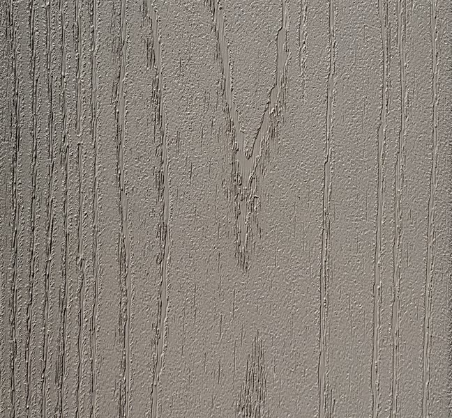
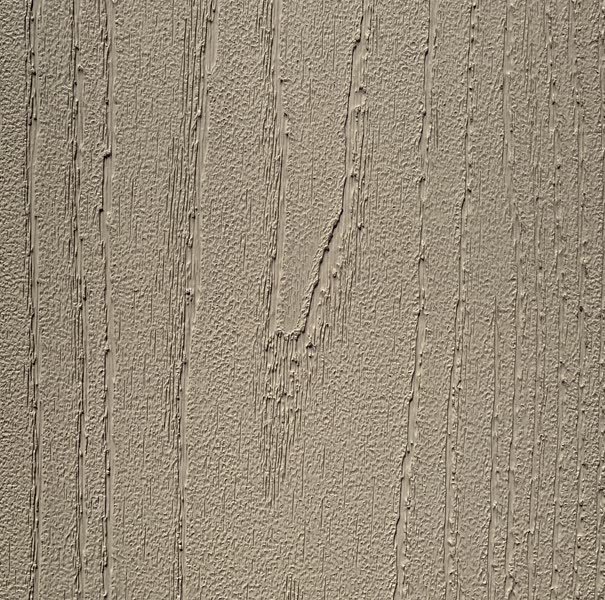
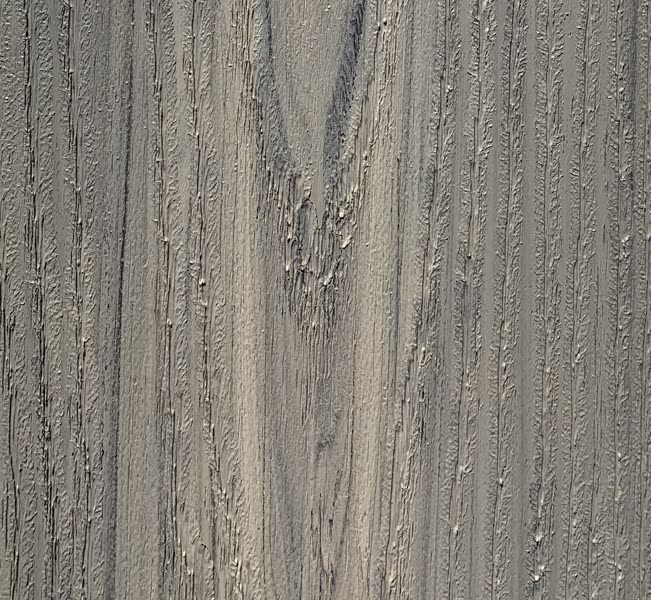
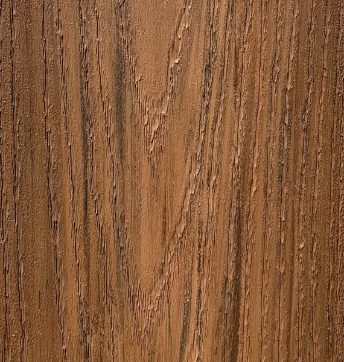
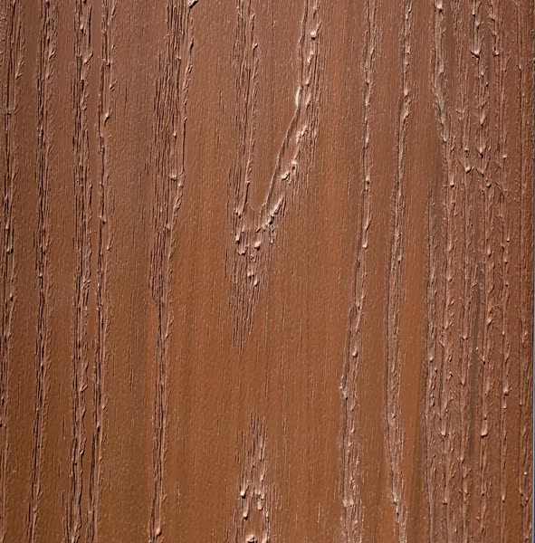
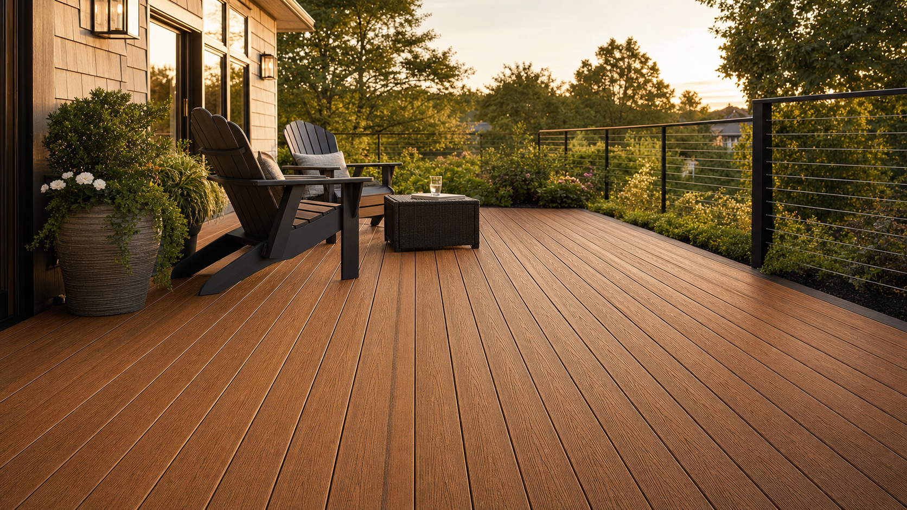

Legacy PVC Decking is the original American Pro deck board. Solid-color, UV-stabilized cellular PVC with a subtle wood-grain texture, extruded on the same line as our flagship TrueGrain Deck at Patwin Plastics in Linden, New Jersey. The chemistry is identical. The difference is the finish: TrueGrain wears a laminated hardwood-grain surface, and Legacy wears a clean, classic color that goes straight through the board.
That last part matters more than any single color name. Because Legacy is solid color all the way through, a saw cut, a stair nose, or a Pro Plug screw hole exposes the same tone as the surface. There is no printed film to wear off and no core color to surprise you at the end of a board. The color you choose is the color the deck stays.
There are six of them. Here is what each one actually reads like once it is down and in daylight, and how to think about the choice for your home.





The two greys
Driftwood
Driftwood is the lighter of the two greys, a soft, sun-bleached tone with a light wood-grain figure running through it. It reads coastal without being cold. On a white or light-siding home it disappears into the architecture in the best way, letting the railing, the water, or the landscaping carry the eye. It is the color that photographs like weathered cedar that never actually weathered.
Beachwood
Beachwood is the cooler, deeper grey. Where Driftwood leans pale and sandy, Beachwood carries more depth and a truer grey cast with a defined grain. It is the right call when you want the modern grey deck look but do not want the surface to feel washed out, and it pairs cleanly with black railing, dark siding, and stone. If you are choosing between the two greys, think of Driftwood as beach house and Beachwood as contemporary.
The warm neutrals
Khaki
Khaki is the most flexible color in the line and the one we reach for when a homeowner is not sure. It is a warm tan, light enough to stay cool underfoot and neutral enough to sit under almost any siding color. It is a safe choice in the good sense of the word: it will not fight the house, and it will not date. This is the color on the photo at the top of this post.
Hazelnut
Hazelnut is a medium warm brown, a half-step darker and richer than Khaki. It gives you a more traditional wood-tone deck without going all the way to a red or a deep brown. On homes with tan, cream, or stone exteriors it adds warmth and grounds the space. It is the middle of the palette, and a lot of decks live comfortably right there.
The reds

Chestnut
Chestnut is a rich red-brown, the deepest and most dramatic color in the Legacy line. It reads like a stained mahogany or a dark hardwood, and it makes a statement on the right home. It looks especially good against grey or white siding, where the contrast does the work, and on larger decks where the depth of color has room to breathe. It is the color for people who want the deck to be part of the design, not the background.
Redwood
Redwood is the warm reddish-brown that the name promises, lighter and more classic than Chestnut. It is the traditional redwood-deck tone that a lot of homeowners grew up with, delivered in a board that never needs the annual re-staining that real redwood demanded to hold that color. It is nostalgic in the right way, and it is the color that most closely echoes a freshly finished natural-wood deck.
How to actually choose
A few honest rules of thumb after a lot of decks:
- Look at the siding first. The deck should relate to the house, not match it exactly. Warm siding usually wants a warm deck (Khaki, Hazelnut, Redwood); cool or grey siding usually wants a grey deck (Driftwood, Beachwood) or a high-contrast red (Chestnut).
- Decide contrast or blend. A deck that contrasts with the house reads as a designed feature. A deck that blends reads as an extension of the house. Both are correct. Chestnut against white is contrast; Khaki against tan is blend.
- Account for sun. Full-sun decks favor lighter colors for comfort underfoot. Shaded or covered decks can carry the deeper tones without a heat penalty.
- Think about scale. Deep colors like Chestnut look richest on larger decks. On a small deck they can feel heavy; a lighter tone will make the same footprint feel bigger.
See it on the real house
A swatch on a screen is a starting point, not a decision. Color reads differently in your light, against your siding, next to your landscaping. That is why we ship free hand samples of any Legacy PVC color to your job site, so you can lay the actual board on the actual deck at the actual time of day before you order a single bundle.
Legacy PVC carries a 25-year limited residential warranty and a 10-year limited commercial warranty, and it is warranted to resist fading to within 5 Delta E units. In plain terms: the color you choose today is the color your deck holds for decades. So it is worth choosing it in person.